인공 지능
인공 지능
TR-4979: 게스트 마운트 FSx ONTAP를 사용하는 AWS 기반 VMware Cloud의 단순화된 자가 관리 Oracle
 변경 제안
변경 제안
Allen Cao, Niyaz Mohamed, NetApp
목적
기업들은 수십 년 전부터 프라이빗 데이터 센터에서 VMware 기반 Oracle을 실행하고 있습니다. AWS의 VMC(VMware Cloud)는 푸시 버튼 방식의 솔루션을 통해 VMware의 엔터프라이즈급 SDDC(소프트웨어 정의 데이터 센터) 소프트웨어를 AWS Cloud의 탄력적인 전용 베어 메탈 인프라에 통합합니다. AWS FSx ONTAP는 VMC SDDC에 대한 프리미엄 스토리지와 Data Fabric을 제공하여 고객이 AWS 서비스에 최적화된 액세스를 통해 vSphere ® 기반 프라이빗, 퍼블릭 및 하이브리드 클라우드 환경에서 Oracle과 같은 비즈니스 크리티컬 애플리케이션을 실행할 수 있도록 지원합니다. 기존 또는 신규 Oracle 작업이든 상관없이 AWS의 VMC는 친숙하고 간편하며 자가 관리형 Oracle 환경을 VMware에서 제공하는 동시에 AWS 클라우드의 모든 이점을 활용하여 모든 플랫폼 관리 및 최적화를 VMware로 연기합니다.
이 문서에서는 Amazon FSx ONTAP를 기본 데이터베이스 스토리지로 사용하는 VMC 환경에서 Oracle 데이터베이스를 구축하고 보호하는 방법을 설명합니다. Oracle 데이터베이스는 FSx 스토리지의 VMC에 직접 VM 게스트 마운트 LUN 또는 NFS 마운트 VMware VMDK 데이터 저장소 디스크로 구축할 수 있습니다. 이 기술 보고서에서는 Oracle 데이터베이스를 iSCSI 프로토콜 및 Oracle ASM이 포함된 VMC 클러스터의 VM에 게스트 마운트 FSx 스토리지로 직접 구축하는 방법을 중점적으로 설명합니다. 또한 NetApp SnapCenter UI 툴을 사용하여 개발/테스트를 위해 Oracle 데이터베이스를 백업, 복원 및 복제하는 방법과 AWS의 VMC에서 스토리지 효율적인 데이터베이스 작업을 위한 기타 사용 사례를 보여줍니다.
이 솔루션은 다음과 같은 사용 사례를 해결합니다.
-
Amazon FSx ONTAP을 기본 데이터베이스 스토리지로 사용하여 AWS의 VMC에 Oracle 데이터베이스를 구현합니다
-
NetApp SnapCenter 툴을 사용하여 AWS 기반 VMC에서 Oracle 데이터베이스 백업 및 복원
-
NetApp SnapCenter 툴을 사용하여 AWS 기반 VMC에서 개발/테스트용 Oracle 데이터베이스 클론 복제 또는 기타 사용 사례입니다
대상
이 솔루션은 다음과 같은 사용자를 대상으로 합니다.
-
Amazon FSx ONTAP를 통해 AWS 기반 VMC에서 Oracle을 구축하고자 하는 DBA
-
AWS 클라우드에서 VMC에서 Oracle 워크로드를 테스트하려는 데이터베이스 솔루션 설계자
-
Amazon FSx ONTAP을 통해 AWS의 VMC에 배포된 Oracle 데이터베이스를 구축하고 관리하고자 하는 스토리지 관리자
-
AWS 클라우드의 VMC에서 Oracle 데이터베이스를 구축하려는 애플리케이션 소유자
솔루션 테스트 및 검증 환경
이 솔루션의 테스트 및 검증은 AWS 기반 VMC가 있는 연구소 환경에서 수행되었으며, 최종 구축 환경과 일치하지 않을 수 있습니다. 자세한 내용은 섹션을 참조하십시오 [Key Factors for Deployment Consideration].
있습니다
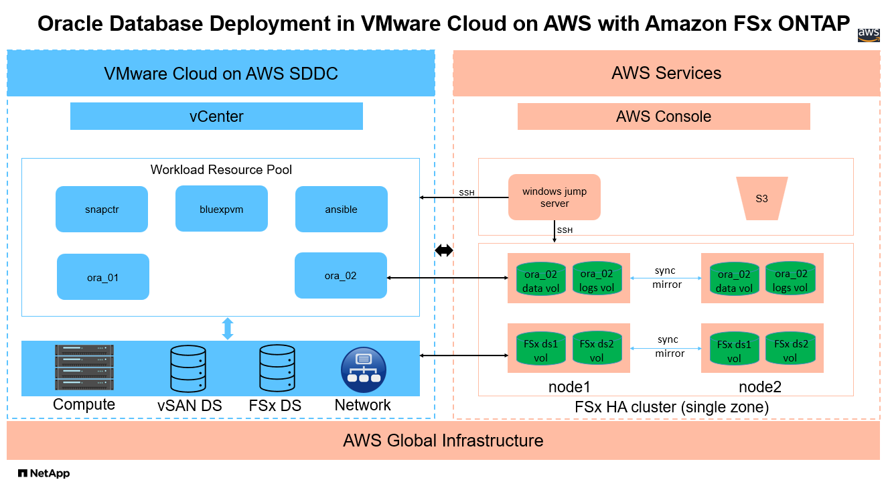
하드웨어 및 소프트웨어 구성 요소
* 하드웨어 * |
||
FSX ONTAP 저장소 |
AWS에서 제공하는 현재 버전입니다 |
VMC와 동일한 VPC 및 가용 영역에 FSx ONTAP HA 클러스터 1개 |
VMC SDDC 클러스터 |
Amazon EC2 i3.metal 단일 노드/Intel Xeon E5-2686 CPU, 36코어/512G RAM |
10.37TB vSAN 스토리지 |
* 소프트웨어 * |
||
RedHat Linux |
RHEL-8.6, 4.18.0-372.9.1.el8.x86_64 커널 |
테스트를 위해 RedHat 서브스크립션을 배포했습니다 |
Windows Server를 선택합니다 |
2022 표준, 10.0.20348 빌드 20348 |
호스팅 SnapCenter 서버 |
Oracle Grid Infrastructure |
버전 19.18 |
RU 패치 p34762026_190000_Linux-x86-64.zip 를 적용했습니다 |
Oracle 데이터베이스 |
버전 19.18 |
RU 패치 p34765931_190000_Linux-x86-64.zip 를 적용했습니다 |
Oracle OPatch |
버전 12.2.0.1.36 |
최신 패치 p6880880_190000_Linux-x86-64.zip |
SnapCenter 서버 |
버전 4.9P1 |
작업 그룹 배포 |
VM용 BlueXP 백업 및 복구 |
릴리즈 1.0 |
ova vSphere 플러그인 VM으로 구축됩니다 |
VMware vSphere를 참조하십시오 |
버전 8.0.1.00300 |
VMware Tools, 버전: 11365 - Linux, 12352 - Windows |
JDK를 엽니다 |
버전 java-1.8.0-openjdk.x86_64 |
DB VM에 대한 SnapCenter 플러그인 요구 사항 |
AWS 기반 VMC의 Oracle 데이터베이스 구성
* 서버 * |
* 데이터베이스 * |
* DB 스토리지 * |
오라_01 |
cdb1(cdb1_pdb1,cdb1_pdb2,cdb1_pdb3) |
FSx ONTAP의 VMDK 데이터 저장소 |
오라_01 |
cdb2(cdb2_pdb) |
FSx ONTAP의 VMDK 데이터 저장소 |
오라_02 |
cdb3(cdb3_pdb1, cdb3_pdb2, cdb3_pdb3) |
직접 게스트가 FSx ONTAP를 마운트합니다 |
오라_02 |
cdb4(cdb4_pdb) |
직접 게스트가 FSx ONTAP를 마운트합니다 |
구축 시 고려해야 할 주요 요소
-
* FSx to VMC 연결. * AWS 기반 VMware Cloud에 SDDC를 배포하면 AWS 계정 내에서 생성되고 VMware에서 관리하는 VPC에서 생성됩니다. 또한 SDDC를 고객 AWS 계정이라고 하는 귀사에 속한 AWS 계정에도 연결해야 합니다. 이 연결을 통해 SDDC는 고객 계정에 속한 AWS 서비스에 액세스할 수 있습니다. FSx for ONTAP은 고객 계정에 구축된 AWS 서비스입니다. VMC SDDC가 고객 계정에 연결되면 VMC SDDC의 VM에서 직접 게스트 마운트를 위해 FSx 스토리지를 사용할 수 있습니다.
-
* FSx 스토리지 HA 클러스터 단일 또는 다중 영역 배포. * 이러한 테스트 및 검증에서는 단일 AWS 가용성 영역에 FSx HA 클러스터를 구축했습니다. 또한 NetApp은 성능을 높이고 가용 영역 간 데이터 전송 비용을 피하기 위해 동일한 가용성 영역에 FSx for NetApp ONTAP 및 VMware Cloud를 AWS에 구축할 것을 권장합니다.
-
* FSx 스토리지 클러스터 크기 조정 * ONTAP 스토리지 파일 시스템용 Amazon FSx는 최대 160,000개의 원시 SSD IOPS, 최대 4Gbps 처리량 및 최대 192TiB 용량을 제공합니다. 하지만 구축 시점의 실제 요구사항에 따라 프로비저닝된 IOPS, 처리량 및 스토리지 제한(최소 1,024GiB)을 기준으로 클러스터 크기를 조정할 수 있습니다. 애플리케이션 가용성에 영향을 주지 않고 용량을 즉각적으로 동적으로 조정할 수 있습니다.
-
* Oracle 데이터 및 로그 레이아웃 * 테스트 및 검증에서 각각 데이터 및 로그용 ASM 디스크 그룹 2개를 구축했습니다. DATA ASM 디스크 그룹 내에서 데이터 볼륨에 4개의 LUN을 프로비저닝했습니다. logs ASM 디스크 그룹 내에서 로그 볼륨에 두 개의 LUN을 프로비저닝했습니다. 일반적으로 Amazon FSx for ONTAP 볼륨 내에 여러 LUN이 배치되므로 성능이 향상됩니다.
-
* iSCSI 구성. * VMC SDDC의 데이터베이스 VM은 iSCSI 프로토콜을 사용하여 FSx 스토리지에 연결됩니다. Oracle AWR 보고서를 신중하게 분석하여 애플리케이션 및 iSCSI 트래픽-처리량 요구사항을 결정함으로써 Oracle 데이터베이스의 최대 I/O 처리량 요구사항을 측정하는 것이 중요합니다. 또한 다중 경로가 올바르게 구성된 두 FSx iSCSI 엔드포인트 모두에 4개의 iSCSI 연결을 할당하는 것이 좋습니다.
-
* 귀하가 생성하는 각 Oracle ASM 디스크 그룹에 사용할 Oracle ASM 이중화 수준. * FSx ONTAP는 이미 FSx 클러스터 수준의 스토리지를 미러링하므로 외부 이중화를 사용해야 합니다. 즉, Oracle ASM이 디스크 그룹의 내용을 미러링할 수 없습니다.
-
* 데이터베이스 백업. * NetApp는 사용자에게 친숙한 UI 인터페이스를 통해 데이터베이스 백업, 복원 및 복제를 위한 SnapCenter 소프트웨어 제품군을 제공합니다. NetApp은 이와 같은 관리 툴을 구현하여 1분 이내에 신속하게 스냅샷 백업, 신속한(분) 데이터베이스 복원 및 데이터베이스 복제를 수행할 것을 권장합니다.
솔루션 구축
다음 섹션에서는 Oracle ASM을 데이터베이스 볼륨 관리자로 사용하는 단일 노드 재시작 구성에서 FSx ONTAP 스토리지를 DB VM에 직접 마운트하여 AWS의 VMC에서 Oracle 19c 구축을 위한 단계별 절차를 제공합니다.
배포를 위한 사전 요구 사항
Details
배포에는 다음과 같은 사전 요구 사항이 필요합니다.
-
VMware Cloud on AWS를 사용하는 SDDC(소프트웨어 정의 데이터 센터)가 생성되었습니다. VMC에서 SDDC를 생성하는 방법에 대한 자세한 지침은 VMware 설명서를 참조하십시오 "AWS 기반 VMware Cloud 시작하기"
-
AWS 계정이 설정되었으며 AWS 계정 내에 필요한 VPC 및 네트워크 세그먼트가 생성되었습니다. AWS 계정이 VMC SDDC에 연결되어 있습니다.
-
AWS EC2 콘솔에서 Amazon FSx for ONTAP 스토리지 HA 클러스터를 구축하여 Oracle 데이터베이스 볼륨을 호스팅합니다. FSx 저장소 배포에 익숙하지 않은 경우 설명서를 참조하십시오 "ONTAP 파일 시스템용 FSx 생성" 을 참조하십시오.
-
위의 단계는 SSH 및 FSx 파일 시스템을 통한 VMC 액세스에서 SDDC의 점프 호스트로 EC2 인스턴스를 생성하는 Terraform 자동화 툴킷을 사용하여 수행할 수 있습니다. 실행 전에 지침을 주의 깊게 검토하고, 환경에 맞게 변수를 변경하십시오.
git clone https://github.com/NetApp-Automation/na_aws_fsx_ec2_deploy.git
-
VMC에 구축할 Oracle 환경을 호스팅할 수 있도록 AWS에서 VMware SDDC에 VM을 구축합니다. 이 데모에서는 Oracle DB 서버로 2개의 Linux VM, SnapCenter 서버용 1개의 Windows 서버, 자동화된 Oracle 설치 또는 구성을 위한 Ansible 컨트롤러로 선택적 Linux 서버 1개를 구축했습니다. 다음은 솔루션 검증을 위한 실습 환경의 스냅샷입니다.

-
선택적으로 NetApp는 필요한 경우 Oracle 배포 및 구성을 실행할 수 있는 몇 가지 자동화 툴킷을 제공합니다. 을 참조하십시오 "DB Automation 툴킷" 를 참조하십시오.

|
Oracle 설치 파일을 스테이징할 수 있는 충분한 공간을 확보하려면 Oracle VM 루트 볼륨에 50G 이상을 할당해야 합니다. |
DB VM 커널 구성
Details
사전 요구 사항이 프로비저닝되면 SSH를 통해 Oracle VM에 관리자 사용자로 로그인하고 루트 사용자에게 sudo를 사용하여 Oracle 설치를 위한 Linux 커널을 구성합니다. Oracle 설치 파일은 AWS S3 버킷에서 스테이징된 후 VM으로 전송할 수 있습니다.
-
스테이징 디렉터리를 만듭니다
/tmp/archive폴더를 지정하고 를 설정합니다777권한.mkdir /tmp/archivechmod 777 /tmp/archive -
Oracle 바이너리 설치 파일 및 기타 필요한 rpm 파일을 에 다운로드하고 스테이징합니다
/tmp/archive디렉토리.에 명시된 설치 파일의 다음 목록을 참조하십시오
/tmp/archiveDB VM에 있습니다.[admin@ora_02 ~]$ ls -l /tmp/archive/ total 10539364 -rw-rw-r--. 1 admin admin 19112 Oct 4 17:04 compat-libcap1-1.10-7.el7.x86_64.rpm -rw-rw-r--. 1 admin admin 3059705302 Oct 4 17:10 LINUX.X64_193000_db_home.zip -rw-rw-r--. 1 admin admin 2889184573 Oct 4 17:11 LINUX.X64_193000_grid_home.zip -rw-rw-r--. 1 admin admin 589145 Oct 4 17:04 netapp_linux_unified_host_utilities-7-1.x86_64.rpm -rw-rw-r--. 1 admin admin 31828 Oct 4 17:04 oracle-database-preinstall-19c-1.0-2.el8.x86_64.rpm -rw-rw-r--. 1 admin admin 2872741741 Oct 4 17:12 p34762026_190000_Linux-x86-64.zip -rw-rw-r--. 1 admin admin 1843577895 Oct 4 17:13 p34765931_190000_Linux-x86-64.zip -rw-rw-r--. 1 admin admin 124347218 Oct 4 17:13 p6880880_190000_Linux-x86-64.zip -rw-rw-r--. 1 admin admin 257136 Oct 4 17:04 policycoreutils-python-utils-2.9-9.el8.noarch.rpm [admin@ora_02 ~]$
-
대부분의 커널 구성 요구 사항을 충족하는 Oracle 19c 사전 설치 RPM을 설치합니다.
yum install /tmp/archive/oracle-database-preinstall-19c-1.0-2.el8.x86_64.rpm -
누락된 을 다운로드하고 설치합니다
compat-libcap1Linux 8에서yum install /tmp/archive/compat-libcap1-1.10-7.el7.x86_64.rpm -
NetApp에서 NetApp 호스트 유틸리티를 다운로드하고 설치합니다.
yum install /tmp/archive/netapp_linux_unified_host_utilities-7-1.x86_64.rpm -
설치합니다
policycoreutils-python-utils.yum install /tmp/archive/policycoreutils-python-utils-2.9-9.el8.noarch.rpm -
열려 있는 JDK 버전 1.8을 설치합니다.
yum install java-1.8.0-openjdk.x86_64 -
iSCSI 초기자 유틸리티를 설치합니다.
yum install iscsi-initiator-utils -
sg3_utils를 설치합니다.
yum install sg3_utils -
device-mapper-multipath를 설치합니다.
yum install device-mapper-multipath -
현재 시스템에서 투명 HugePages를 비활성화합니다.
echo never > /sys/kernel/mm/transparent_hugepage/enabledecho never > /sys/kernel/mm/transparent_hugepage/defrag -
에 다음 행을 추가합니다
/etc/rc.local를 눌러 비활성화합니다transparent_hugepage재부팅 후vi /etc/rc.local# Disable transparent hugepages if test -f /sys/kernel/mm/transparent_hugepage/enabled; then echo never > /sys/kernel/mm/transparent_hugepage/enabled fi if test -f /sys/kernel/mm/transparent_hugepage/defrag; then echo never > /sys/kernel/mm/transparent_hugepage/defrag fi -
SELinux를 변경하여 해제합니다
SELINUX=enforcing를 선택합니다SELINUX=disabled. 변경 사항을 적용하려면 호스트를 재부팅해야 합니다.vi /etc/sysconfig/selinux -
에 다음 행을 추가합니다
limit.conf파일 설명자 제한과 스택 크기를 설정합니다.vi /etc/security/limits.conf* hard nofile 65536 * soft stack 10240
-
다음 명령으로 구성된 스왑 공간이 없는 경우 DB VM에 스왑 공간을 추가합니다. "스왑 파일을 사용하여 Amazon EC2 인스턴스에서 스왑 공간으로 사용할 메모리를 어떻게 할당합니까?" 정확한 추가 공간은 최대 16G RAM의 크기에 따라 달라집니다.
-
변경
node.session.timeo.replacement_timeout에 있습니다iscsi.conf120 ~ 5초 사이의 구성 파일.vi /etc/iscsi/iscsid.conf -
EC2 인스턴스에서 iSCSI 서비스를 설정 및 시작합니다.
systemctl enable iscsidsystemctl start iscsid -
데이터베이스 LUN 매핑에 사용할 iSCSI 이니시에이터 주소를 검색합니다.
cat /etc/iscsi/initiatorname.iscsi -
ASM 관리 사용자(Oracle)에 대한 ASM 그룹을 추가합니다.
groupadd asmadmingroupadd asmdbagroupadd asmoper -
Oracle 사용자를 수정하여 ASM 그룹을 보조 그룹으로 추가합니다(Oracle 사전 설치 RPM 설치 후 Oracle 사용자가 생성되어야 함).
usermod -a -G asmadmin oracleusermod -a -G asmdba oracleusermod -a -G asmoper oracle -
Linux 방화벽이 활성화된 경우 중지하고 비활성화합니다.
systemctl stop firewalldsystemctl disable firewalld -
관리자 사용자에 대해 주석 처리를 해제하여 암호 없는 sudo를 활성화합니다
# %wheel ALL=(ALL) NOPASSWD: ALL/etc/sudoers 파일에 줄을 입력합니다. 파일 권한을 변경하여 편집합니다.chmod 640 /etc/sudoersvi /etc/sudoerschmod 440 /etc/sudoers -
EC2 인스턴스를 재부팅합니다.
FSx ONTAP LUN을 DB VM에 프로비저닝하고 매핑합니다
Details
SSH 및 FSx 클러스터 관리 IP를 통해 FSx 클러스터에 fsxadmin 사용자로 로그인하여 명령줄에서 세 개의 볼륨을 프로비저닝합니다. Oracle 데이터베이스 바이너리, 데이터 및 로그 파일을 호스팅할 볼륨 내에 LUN을 생성합니다.
-
SSH를 통해 FSx 클러스터에 fsxadmin 사용자로 로그인합니다.
ssh fsxadmin@10.49.0.74 -
다음 명령을 실행하여 Oracle 바이너리에 대한 볼륨을 생성합니다.
vol create -volume ora_02_biny -aggregate aggr1 -size 50G -state online -type RW -snapshot-policy none -tiering-policy snapshot-only -
다음 명령을 실행하여 Oracle 데이터용 볼륨을 생성합니다.
vol create -volume ora_02_data -aggregate aggr1 -size 100G -state online -type RW -snapshot-policy none -tiering-policy snapshot-only -
다음 명령을 실행하여 Oracle 로그용 볼륨을 생성합니다.
vol create -volume ora_02_logs -aggregate aggr1 -size 100G -state online -type RW -snapshot-policy none -tiering-policy snapshot-only -
생성된 볼륨을 확인합니다.
vol show ora*명령의 출력:
FsxId0c00cec8dad373fd1::> vol show ora* Vserver Volume Aggregate State Type Size Available Used% --------- ------------ ------------ ---------- ---- ---------- ---------- ----- nim ora_02_biny aggr1 online RW 50GB 22.98GB 51% nim ora_02_data aggr1 online RW 100GB 18.53GB 80% nim ora_02_logs aggr1 online RW 50GB 7.98GB 83%
-
데이터베이스 바이너리 볼륨 내에 바이너리 LUN을 생성합니다.
lun create -path /vol/ora_02_biny/ora_02_biny_01 -size 40G -ostype linux -
데이터베이스 데이터 볼륨 내에 데이터 LUN을 생성합니다.
lun create -path /vol/ora_02_data/ora_02_data_01 -size 20G -ostype linuxlun create -path /vol/ora_02_data/ora_02_data_02 -size 20G -ostype linuxlun create -path /vol/ora_02_data/ora_02_data_03 -size 20G -ostype linuxlun create -path /vol/ora_02_data/ora_02_data_04 -size 20G -ostype linux -
데이터베이스 로그 볼륨 내에 로그 LUN을 생성합니다.
lun create -path /vol/ora_02_logs/ora_02_logs_01 -size 40G -ostype linuxlun create -path /vol/ora_02_logs/ora_02_logs_02 -size 40G -ostype linux -
위의 EC2 커널 구성의 14단계에서 검색된 이니시에이터를 사용하여 EC2 인스턴스에 대한 igroup을 생성합니다.
igroup create -igroup ora_02 -protocol iscsi -ostype linux -initiator iqn.1994-05.com.redhat:f65fed7641c2 -
LUN을 위에서 생성한 igroup에 매핑합니다. 각각의 추가 LUN에 대해 LUN ID를 순차적으로 증분합니다.
lun map -path /vol/ora_02_biny/ora_02_biny_01 -igroup ora_02 -vserver svm_ora -lun-id 0 lun map -path /vol/ora_02_data/ora_02_data_01 -igroup ora_02 -vserver svm_ora -lun-id 1 lun map -path /vol/ora_02_data/ora_02_data_02 -igroup ora_02 -vserver svm_ora -lun-id 2 lun map -path /vol/ora_02_data/ora_02_data_03 -igroup ora_02 -vserver svm_ora -lun-id 3 lun map -path /vol/ora_02_data/ora_02_data_04 -igroup ora_02 -vserver svm_ora -lun-id 4 lun map -path /vol/ora_02_logs/ora_02_logs_01 -igroup ora_02 -vserver svm_ora -lun-id 5 lun map -path /vol/ora_02_logs/ora_02_logs_02 -igroup ora_02 -vserver svm_ora -lun-id 6 -
LUN 매핑을 확인합니다.
mapping show이 문제는 다음 항목을 반환해야 합니다.
FsxId0c00cec8dad373fd1::> mapping show (lun mapping show) Vserver Path Igroup LUN ID Protocol ---------- ---------------------------------------- ------- ------ -------- nim /vol/ora_02_biny/ora_02_u01_01 ora_02 0 iscsi nim /vol/ora_02_data/ora_02_u02_01 ora_02 1 iscsi nim /vol/ora_02_data/ora_02_u02_02 ora_02 2 iscsi nim /vol/ora_02_data/ora_02_u02_03 ora_02 3 iscsi nim /vol/ora_02_data/ora_02_u02_04 ora_02 4 iscsi nim /vol/ora_02_logs/ora_02_u03_01 ora_02 5 iscsi nim /vol/ora_02_logs/ora_02_u03_02 ora_02 6 iscsi
DB VM 스토리지 구성
Details
이제 VMC 데이터베이스 VM에 Oracle 그리드 인프라 및 데이터베이스 설치용 FSx ONTAP 스토리지를 가져오고 설정합니다.
-
Windows 점프 서버에서 Putty를 사용하여 관리자 권한으로 SSH를 통해 DB VM에 로그인합니다.
-
SVM iSCSI IP 주소를 사용하여 FSx iSCSI 엔드포인트를 검색합니다. 환경별 포털 주소로 변경합니다.
sudo iscsiadm iscsiadm --mode discovery --op update --type sendtargets --portal 10.49.0.12 -
각 타겟에 로그인하여 iSCSI 세션을 설정합니다.
sudo iscsiadm --mode node -l all명령의 예상 출력은 다음과 같습니다.
[ec2-user@ip-172-30-15-58 ~]$ sudo iscsiadm --mode node -l all Logging in to [iface: default, target: iqn.1992-08.com.netapp:sn.1f795e65c74911edb785affbf0a2b26e:vs.3, portal: 10.49.0.12,3260] Logging in to [iface: default, target: iqn.1992-08.com.netapp:sn.1f795e65c74911edb785affbf0a2b26e:vs.3, portal: 10.49.0.186,3260] Login to [iface: default, target: iqn.1992-08.com.netapp:sn.1f795e65c74911edb785affbf0a2b26e:vs.3, portal: 10.49.0.12,3260] successful. Login to [iface: default, target: iqn.1992-08.com.netapp:sn.1f795e65c74911edb785affbf0a2b26e:vs.3, portal: 10.49.0.186,3260] successful.
-
활성 iSCSI 세션 목록을 보고 확인합니다.
sudo iscsiadm --mode sessioniSCSI 세션을 반환합니다.
[ec2-user@ip-172-30-15-58 ~]$ sudo iscsiadm --mode session tcp: [1] 10.49.0.186:3260,1028 iqn.1992-08.com.netapp:sn.545a38bf06ac11ee8503e395ab90d704:vs.3 (non-flash) tcp: [2] 10.49.0.12:3260,1029 iqn.1992-08.com.netapp:sn.545a38bf06ac11ee8503e395ab90d704:vs.3 (non-flash)
-
LUN을 호스트로 가져왔는지 확인합니다.
sudo sanlun lun show그러면 FSx의 Oracle LUN 목록이 반환됩니다.
[admin@ora_02 ~]$ sudo sanlun lun show controller(7mode/E-Series)/ device host lun vserver(cDOT/FlashRay) lun-pathname filename adapter protocol size product ------------------------------------------------------------------------------------------------------------------------------- nim /vol/ora_02_logs/ora_02_u03_02 /dev/sdo host34 iSCSI 20g cDOT nim /vol/ora_02_logs/ora_02_u03_01 /dev/sdn host34 iSCSI 20g cDOT nim /vol/ora_02_data/ora_02_u02_04 /dev/sdm host34 iSCSI 20g cDOT nim /vol/ora_02_data/ora_02_u02_03 /dev/sdl host34 iSCSI 20g cDOT nim /vol/ora_02_data/ora_02_u02_02 /dev/sdk host34 iSCSI 20g cDOT nim /vol/ora_02_data/ora_02_u02_01 /dev/sdj host34 iSCSI 20g cDOT nim /vol/ora_02_biny/ora_02_u01_01 /dev/sdi host34 iSCSI 40g cDOT nim /vol/ora_02_logs/ora_02_u03_02 /dev/sdh host33 iSCSI 20g cDOT nim /vol/ora_02_logs/ora_02_u03_01 /dev/sdg host33 iSCSI 20g cDOT nim /vol/ora_02_data/ora_02_u02_04 /dev/sdf host33 iSCSI 20g cDOT nim /vol/ora_02_data/ora_02_u02_03 /dev/sde host33 iSCSI 20g cDOT nim /vol/ora_02_data/ora_02_u02_02 /dev/sdd host33 iSCSI 20g cDOT nim /vol/ora_02_data/ora_02_u02_01 /dev/sdc host33 iSCSI 20g cDOT nim /vol/ora_02_biny/ora_02_u01_01 /dev/sdb host33 iSCSI 40g cDOT
-
를 구성합니다
multipath.conf다음 기본 항목과 블랙리스트 항목이 있는 파일입니다.sudo vi /etc/multipath.conf다음 항목 추가:
defaults { find_multipaths yes user_friendly_names yes } blacklist { devnode "^(ram|raw|loop|fd|md|dm-|sr|scd|st)[0-9]*" devnode "^hd[a-z]" devnode "^cciss.*" } -
다중 경로 서비스를 시작합니다.
sudo systemctl start multipathd이제 다중 경로 장치가 에 나타납니다
/dev/mapper디렉토리.[ec2-user@ip-172-30-15-58 ~]$ ls -l /dev/mapper total 0 lrwxrwxrwx 1 root root 7 Mar 21 20:13 3600a09806c574235472455534e68512d -> ../dm-0 lrwxrwxrwx 1 root root 7 Mar 21 20:13 3600a09806c574235472455534e685141 -> ../dm-1 lrwxrwxrwx 1 root root 7 Mar 21 20:13 3600a09806c574235472455534e685142 -> ../dm-2 lrwxrwxrwx 1 root root 7 Mar 21 20:13 3600a09806c574235472455534e685143 -> ../dm-3 lrwxrwxrwx 1 root root 7 Mar 21 20:13 3600a09806c574235472455534e685144 -> ../dm-4 lrwxrwxrwx 1 root root 7 Mar 21 20:13 3600a09806c574235472455534e685145 -> ../dm-5 lrwxrwxrwx 1 root root 7 Mar 21 20:13 3600a09806c574235472455534e685146 -> ../dm-6 crw------- 1 root root 10, 236 Mar 21 18:19 control
-
SSH를 통해 fsxadmin 사용자로 FSx ONTAP 클러스터에 로그인하여 6c574xxx…로 시작하는 각 LUN의 일련-16진수 번호를 검색합니다. 16진수 번호는 AWS 공급업체 ID인 3600a0980으로 시작합니다.
lun show -fields serial-hex그리고 다음과 같이 돌아옵니다.
FsxId02ad7bf3476b741df::> lun show -fields serial-hex vserver path serial-hex ------- ------------------------------- ------------------------ svm_ora /vol/ora_02_biny/ora_02_biny_01 6c574235472455534e68512d svm_ora /vol/ora_02_data/ora_02_data_01 6c574235472455534e685141 svm_ora /vol/ora_02_data/ora_02_data_02 6c574235472455534e685142 svm_ora /vol/ora_02_data/ora_02_data_03 6c574235472455534e685143 svm_ora /vol/ora_02_data/ora_02_data_04 6c574235472455534e685144 svm_ora /vol/ora_02_logs/ora_02_logs_01 6c574235472455534e685145 svm_ora /vol/ora_02_logs/ora_02_logs_02 6c574235472455534e685146 7 entries were displayed.
-
를 업데이트합니다
/dev/multipath.conf파일 - 다중 경로 장치에 대한 사용자 친화적인 이름을 추가합니다.sudo vi /etc/multipath.conf다음 항목이 있는 경우:
multipaths { multipath { wwid 3600a09806c574235472455534e68512d alias ora_02_biny_01 } multipath { wwid 3600a09806c574235472455534e685141 alias ora_02_data_01 } multipath { wwid 3600a09806c574235472455534e685142 alias ora_02_data_02 } multipath { wwid 3600a09806c574235472455534e685143 alias ora_02_data_03 } multipath { wwid 3600a09806c574235472455534e685144 alias ora_02_data_04 } multipath { wwid 3600a09806c574235472455534e685145 alias ora_02_logs_01 } multipath { wwid 3600a09806c574235472455534e685146 alias ora_02_logs_02 } } -
다중 경로 서비스를 재부팅하여 에서 장치가 에 있는지 확인합니다
/dev/mapperLUN 이름 대 직렬 16진수 ID로 변경되었습니다.sudo systemctl restart multipathd확인합니다
/dev/mapper다음과 같이 돌아가려면:[ec2-user@ip-172-30-15-58 ~]$ ls -l /dev/mapper total 0 crw------- 1 root root 10, 236 Mar 21 18:19 control lrwxrwxrwx 1 root root 7 Mar 21 20:41 ora_02_biny_01 -> ../dm-0 lrwxrwxrwx 1 root root 7 Mar 21 20:41 ora_02_data_01 -> ../dm-1 lrwxrwxrwx 1 root root 7 Mar 21 20:41 ora_02_data_02 -> ../dm-2 lrwxrwxrwx 1 root root 7 Mar 21 20:41 ora_02_data_03 -> ../dm-3 lrwxrwxrwx 1 root root 7 Mar 21 20:41 ora_02_data_04 -> ../dm-4 lrwxrwxrwx 1 root root 7 Mar 21 20:41 ora_02_logs_01 -> ../dm-5 lrwxrwxrwx 1 root root 7 Mar 21 20:41 ora_02_logs_02 -> ../dm-6
-
단일 주 파티션으로 바이너리 LUN을 파티셔닝합니다.
sudo fdisk /dev/mapper/ora_02_biny_01 -
XFS 파일 시스템을 사용하여 분할된 바이너리 LUN을 포맷합니다.
sudo mkfs.xfs /dev/mapper/ora_02_biny_01p1 -
에 바이너리 LUN을 마운트합니다
/u01.sudo mkdir /u01sudo mount -t xfs /dev/mapper/ora_02_biny_01p1 /u01 -
변경
/u01Oracle 사용자 및 연결된 기본 그룹에 지점 소유권을 마운트합니다.sudo chown oracle:oinstall /u01 -
바이너리 LUN의 UUI를 찾습니다.
sudo blkid /dev/mapper/ora_02_biny_01p1 -
에 마운트 지점을 추가합니다
/etc/fstab.sudo vi /etc/fstab다음 줄을 추가합니다.
UUID=d89fb1c9-4f89-4de4-b4d9-17754036d11d /u01 xfs defaults,nofail 0 2
-
루트 사용자로 Oracle 디바이스에 대한 udev 규칙을 추가합니다.
vi /etc/udev/rules.d/99-oracle-asmdevices.rules다음 항목 포함:
ENV{DM_NAME}=="ora*", GROUP:="oinstall", OWNER:="oracle", MODE:="660" -
루트 사용자로 udev 규칙을 다시 로드합니다.
udevadm control --reload-rules -
루트 사용자로 udev 규칙을 트리거합니다.
udevadm trigger -
루트 사용자로 multipathd를 다시 로드합니다.
systemctl restart multipathd -
EC2 인스턴스 호스트를 재부팅합니다.
Oracle 그리드 인프라 설치
Details
-
SSH를 통해 관리자 사용자로 DB VM에 로그인하고 주석 처리를 해제하여 암호 인증을 활성화합니다
PasswordAuthentication yes그런 다음 의견을 남기기 바랍니다PasswordAuthentication no.sudo vi /etc/ssh/sshd_config -
sshd 서비스를 다시 시작합니다.
sudo systemctl restart sshd -
Oracle 사용자 암호를 재설정합니다.
sudo passwd oracle -
Oracle Restart 소프트웨어 소유자 사용자(Oracle)로 로그인합니다. 다음과 같이 Oracle 디렉토리를 생성합니다.
mkdir -p /u01/app/oraclemkdir -p /u01/app/oraInventory -
디렉터리 권한 설정을 변경합니다.
chmod -R 775 /u01/app -
그리드 홈 디렉터리를 만들고 변경합니다.
mkdir -p /u01/app/oracle/product/19.0.0/gridcd /u01/app/oracle/product/19.0.0/grid -
그리드 설치 파일의 압축을 풉니다.
unzip -q /tmp/archive/LINUX.X64_193000_grid_home.zip -
그리드 홈에서 을 삭제합니다
OPatch디렉토리.rm -rf OPatch -
그리드 홈에서 압축을 풉니다
p6880880_190000_Linux-x86-64.zip.unzip -q /tmp/archive/p6880880_190000_Linux-x86-64.zip -
그리드 홈에서 수정합니다
cv/admin/cvu_config, 주석 취소 및 바꾸기CV_ASSUME_DISTID=OEL5와 함께CV_ASSUME_DISTID=OL7.vi cv/admin/cvu_config -
를 준비합니다
gridsetup.rsp자동 설치용 파일 및 RSP 파일을 에 배치합니다/tmp/archive디렉토리. RSP 파일은 섹션 A, B 및 G에 다음 정보를 포함해야 합니다.INVENTORY_LOCATION=/u01/app/oraInventory oracle.install.option=HA_CONFIG ORACLE_BASE=/u01/app/oracle oracle.install.asm.OSDBA=asmdba oracle.install.asm.OSOPER=asmoper oracle.install.asm.OSASM=asmadmin oracle.install.asm.SYSASMPassword="SetPWD" oracle.install.asm.diskGroup.name=DATA oracle.install.asm.diskGroup.redundancy=EXTERNAL oracle.install.asm.diskGroup.AUSize=4 oracle.install.asm.diskGroup.disks=/dev/mapper/ora_02_data_01,/dev/mapper/ora_02_data_02,/dev/mapper/ora_02_data_03,/dev/mapper/ora_02_data_04 oracle.install.asm.diskGroup.diskDiscoveryString=/dev/mapper/* oracle.install.asm.monitorPassword="SetPWD" oracle.install.asm.configureAFD=true
-
EC2 인스턴스에 루트 사용자로 로그인하여 설정합니다
ORACLE_HOME및ORACLE_BASE.export ORACLE_HOME=/u01/app/oracle/product/19.0.0/export ORACLE_BASE=/tmpcd /u01/app/oracle/product/19.0.0/grid/bin -
Oracle ASM 필터 드라이버와 함께 사용할 디스크 디바이스를 초기화합니다.
./asmcmd afd_label DATA01 /dev/mapper/ora_02_data_01 --init./asmcmd afd_label DATA02 /dev/mapper/ora_02_data_02 --init./asmcmd afd_label DATA03 /dev/mapper/ora_02_data_03 --init./asmcmd afd_label DATA04 /dev/mapper/ora_02_data_04 --init./asmcmd afd_label LOGS01 /dev/mapper/ora_02_logs_01 --init./asmcmd afd_label LOGS02 /dev/mapper/ora_02_logs_02 --init -
설치합니다
cvuqdisk-1.0.10-1.rpm.rpm -ivh /u01/app/oracle/product/19.0.0/grid/cv/rpm/cvuqdisk-1.0.10-1.rpm -
설정 해제
$ORACLE_BASE.unset ORACLE_BASE -
EC2 인스턴스에 Oracle 사용자로 로그인하여 에서 패치를 추출합니다
/tmp/archive폴더.unzip -q /tmp/archive/p34762026_190000_Linux-x86-64.zip -d /tmp/archive -
그리드 홈 /u01/app/oracle/product/19.0.0/GRID에서 Oracle 사용자로 를 실행합니다
gridSetup.sh그리드 인프라 설치용../gridSetup.sh -applyRU /tmp/archive/34762026/ -silent -responseFile /tmp/archive/gridsetup.rsp -
루트 사용자로 다음 스크립트를 실행합니다.
/u01/app/oraInventory/orainstRoot.sh/u01/app/oracle/product/19.0.0/grid/root.sh -
루트 사용자로 multipathd를 다시 로드합니다.
systemctl restart multipathd -
Oracle 사용자는 다음 명령을 실행하여 구성을 완료합니다.
/u01/app/oracle/product/19.0.0/grid/gridSetup.sh -executeConfigTools -responseFile /tmp/archive/gridsetup.rsp -silent -
Oracle 사용자로 로그 디스크 그룹을 생성합니다.
bin/asmca -silent -sysAsmPassword 'yourPWD' -asmsnmpPassword 'yourPWD' -createDiskGroup -diskGroupName LOGS -disk 'AFD:LOGS*' -redundancy EXTERNAL -au_size 4 -
Oracle 사용자는 설치 구성 후 그리드 서비스를 검증합니다.
bin/crsctl stat res -t[oracle@ora_02 grid]$ bin/crsctl stat res -t -------------------------------------------------------------------------------- Name Target State Server State details -------------------------------------------------------------------------------- Local Resources -------------------------------------------------------------------------------- ora.DATA.dg ONLINE ONLINE ora_02 STABLE ora.LISTENER.lsnr ONLINE INTERMEDIATE ora_02 Not All Endpoints Re gistered,STABLE ora.LOGS.dg ONLINE ONLINE ora_02 STABLE ora.asm ONLINE ONLINE ora_02 Started,STABLE ora.ons OFFLINE OFFLINE ora_02 STABLE -------------------------------------------------------------------------------- Cluster Resources -------------------------------------------------------------------------------- ora.cssd 1 ONLINE ONLINE ora_02 STABLE ora.diskmon 1 OFFLINE OFFLINE STABLE ora.driver.afd 1 ONLINE ONLINE ora_02 STABLE ora.evmd 1 ONLINE ONLINE ora_02 STABLE -------------------------------------------------------------------------------- -
Valiate ASM 필터 드라이버 상태입니다.
[oracle@ora_02 grid]$ export ORACLE_HOME=/u01/app/oracle/product/19.0.0/grid [oracle@ora_02 grid]$ export ORACLE_SID=+ASM [oracle@ora_02 grid]$ export PATH=$PATH:$ORACLE_HOME/bin [oracle@ora_02 grid]$ asmcmd ASMCMD> lsdg State Type Rebal Sector Logical_Sector Block AU Total_MB Free_MB Req_mir_free_MB Usable_file_MB Offline_disks Voting_files Name MOUNTED EXTERN N 512 512 4096 4194304 81920 81780 0 81780 0 N DATA/ MOUNTED EXTERN N 512 512 4096 4194304 40960 40852 0 40852 0 N LOGS/ ASMCMD> afd_state ASMCMD-9526: The AFD state is 'LOADED' and filtering is 'ENABLED' on host 'ora_02' ASMCMD> exit [oracle@ora_02 grid]$
-
HA 서비스 상태를 검증합니다.
[oracle@ora_02 bin]$ ./crsctl check has CRS-4638: Oracle High Availability Services is online
Oracle 데이터베이스 설치
Details
-
Oracle 사용자로 로그인하고 설정을 해제합니다
$ORACLE_HOME및$ORACLE_SID설정되어 있는지 확인합니다.unset ORACLE_HOMEunset ORACLE_SID -
Oracle DB 홈 디렉토리를 생성하고 디렉토리를 이 디렉토리로 변경합니다.
mkdir /u01/app/oracle/product/19.0.0/cdb3cd /u01/app/oracle/product/19.0.0/cdb3 -
Oracle DB 설치 파일의 압축을 풉니다.
unzip -q /tmp/archive/LINUX.X64_193000_db_home.zip -
DB 홈에서 를 삭제합니다
OPatch디렉토리.rm -rf OPatch -
DB HOME에서 압축을 풉니다
p6880880_190000_Linux-x86-64.zip.unzip -q /tmp/archive/p6880880_190000_Linux-x86-64.zip -
DB 홈에서 수정한다
cv/admin/cvu_config주석을 해제하고 바꿉니다CV_ASSUME_DISTID=OEL5와 함께CV_ASSUME_DISTID=OL7.vi cv/admin/cvu_config -
에서
/tmp/archive디렉토리에서 DB 19.18 RU 패치의 포장을 풉니다.unzip -q /tmp/archive/p34765931_190000_Linux-x86-64.zip -d /tmp/archive -
에서 DB 자동 설치 RSP 파일을 준비합니다
/tmp/archive/dbinstall.rsp다음 값이 있는 디렉터리:oracle.install.option=INSTALL_DB_SWONLY UNIX_GROUP_NAME=oinstall INVENTORY_LOCATION=/u01/app/oraInventory ORACLE_HOME=/u01/app/oracle/product/19.0.0/cdb3 ORACLE_BASE=/u01/app/oracle oracle.install.db.InstallEdition=EE oracle.install.db.OSDBA_GROUP=dba oracle.install.db.OSOPER_GROUP=oper oracle.install.db.OSBACKUPDBA_GROUP=oper oracle.install.db.OSDGDBA_GROUP=dba oracle.install.db.OSKMDBA_GROUP=dba oracle.install.db.OSRACDBA_GROUP=dba oracle.install.db.rootconfig.executeRootScript=false
-
cdb3 home/u01/app/oracle/product/19.0.0/cdb3에서 자동 소프트웨어 전용 DB 설치를 실행합니다.
./runInstaller -applyRU /tmp/archive/34765931/ -silent -ignorePrereqFailure -responseFile /tmp/archive/dbinstall.rsp -
루트 사용자로 를 실행합니다
root.sh소프트웨어 전용 설치 후 스크립트./u01/app/oracle/product/19.0.0/db1/root.sh -
Oracle 사용자로 를 생성합니다
dbca.rsp다음 항목이 있는 파일:gdbName=cdb3.demo.netapp.com sid=cdb3 createAsContainerDatabase=true numberOfPDBs=3 pdbName=cdb3_pdb useLocalUndoForPDBs=true pdbAdminPassword="yourPWD" templateName=General_Purpose.dbc sysPassword="yourPWD" systemPassword="yourPWD" dbsnmpPassword="yourPWD" datafileDestination=+DATA recoveryAreaDestination=+LOGS storageType=ASM diskGroupName=DATA characterSet=AL32UTF8 nationalCharacterSet=AL16UTF16 listeners=LISTENER databaseType=MULTIPURPOSE automaticMemoryManagement=false totalMemory=8192
-
Oracle 사용자로 dbca를 사용하여 DB 생성을 시작합니다.
bin/dbca -silent -createDatabase -responseFile /tmp/archive/dbca.rsp출력:
Prepare for db operation 7% complete Registering database with Oracle Restart 11% complete Copying database files 33% complete Creating and starting Oracle instance 35% complete 38% complete 42% complete 45% complete 48% complete Completing Database Creation 53% complete 55% complete 56% complete Creating Pluggable Databases 60% complete 64% complete 69% complete 78% complete Executing Post Configuration Actions 100% complete Database creation complete. For details check the logfiles at: /u01/app/oracle/cfgtoollogs/dbca/cdb3. Database Information: Global Database Name:cdb3.vmc.netapp.com System Identifier(SID):cdb3 Look at the log file "/u01/app/oracle/cfgtoollogs/dbca/cdb3/cdb3.log" for further details.
-
2단계부터 동일한 절차를 반복하여 단일 PDB로 별도의 ORACLE_HOME/u01/APP/ORACLE/PRODUCT/19.0.0/cdb4에 컨테이너 데이터베이스 cdb4를 생성합니다.
-
Oracle 사용자로서 DB 생성 후 Oracle Restart HA 서비스를 검증하여 모든 데이터베이스(cdb3, cdb4)가 HA 서비스에 등록되었는지 확인합니다.
/u01/app/oracle/product/19.0.0/grid/crsctl stat res -t출력:
[oracle@ora_02 bin]$ ./crsctl stat res -t -------------------------------------------------------------------------------- Name Target State Server State details -------------------------------------------------------------------------------- Local Resources -------------------------------------------------------------------------------- ora.DATA.dg ONLINE ONLINE ora_02 STABLE ora.LISTENER.lsnr ONLINE INTERMEDIATE ora_02 Not All Endpoints Re gistered,STABLE ora.LOGS.dg ONLINE ONLINE ora_02 STABLE ora.asm ONLINE ONLINE ora_02 Started,STABLE ora.ons OFFLINE OFFLINE ora_02 STABLE -------------------------------------------------------------------------------- Cluster Resources -------------------------------------------------------------------------------- ora.cdb3.db 1 ONLINE ONLINE ora_02 Open,HOME=/u01/app/o racle/product/19.0.0 /cdb3,STABLE ora.cdb4.db 1 ONLINE ONLINE ora_02 Open,HOME=/u01/app/o racle/product/19.0.0 /cdb4,STABLE ora.cssd 1 ONLINE ONLINE ora_02 STABLE ora.diskmon 1 OFFLINE OFFLINE STABLE ora.driver.afd 1 ONLINE ONLINE ora_02 STABLE ora.evmd 1 ONLINE ONLINE ora_02 STABLE -------------------------------------------------------------------------------- -
Oracle 사용자를 설정합니다
.bash_profile.vi ~/.bash_profile다음 항목 추가:
export ORACLE_HOME=/u01/app/oracle/product/19.0.0/db3 export ORACLE_SID=db3 export PATH=$PATH:$ORACLE_HOME/bin alias asm='export ORACLE_HOME=/u01/app/oracle/product/19.0.0/grid;export ORACLE_SID=+ASM;export PATH=$PATH:$ORACLE_HOME/bin' alias cdb3='export ORACLE_HOME=/u01/app/oracle/product/19.0.0/cdb3;export ORACLE_SID=cdb3;export PATH=$PATH:$ORACLE_HOME/bin' alias cdb4='export ORACLE_HOME=/u01/app/oracle/product/19.0.0/cdb4;export ORACLE_SID=cdb4;export PATH=$PATH:$ORACLE_HOME/bin'
-
cdb3에 대해 생성된 CDB/PDB를 확인합니다.
cdb3[oracle@ora_02 ~]$ sqlplus / as sysdba SQL*Plus: Release 19.0.0.0.0 - Production on Mon Oct 9 08:19:20 2023 Version 19.18.0.0.0 Copyright (c) 1982, 2022, Oracle. All rights reserved. Connected to: Oracle Database 19c Enterprise Edition Release 19.0.0.0.0 - Production Version 19.18.0.0.0 SQL> select name, open_mode from v$database; NAME OPEN_MODE --------- -------------------- CDB3 READ WRITE SQL> show pdbs CON_ID CON_NAME OPEN MODE RESTRICTED ---------- ------------------------------ ---------- ---------- 2 PDB$SEED READ ONLY NO 3 CDB3_PDB1 READ WRITE NO 4 CDB3_PDB2 READ WRITE NO 5 CDB3_PDB3 READ WRITE NO SQL> SQL> select name from v$datafile; NAME -------------------------------------------------------------------------------- +DATA/CDB3/DATAFILE/system.257.1149420273 +DATA/CDB3/DATAFILE/sysaux.258.1149420317 +DATA/CDB3/DATAFILE/undotbs1.259.1149420343 +DATA/CDB3/86B637B62FE07A65E053F706E80A27CA/DATAFILE/system.266.1149421085 +DATA/CDB3/86B637B62FE07A65E053F706E80A27CA/DATAFILE/sysaux.267.1149421085 +DATA/CDB3/DATAFILE/users.260.1149420343 +DATA/CDB3/86B637B62FE07A65E053F706E80A27CA/DATAFILE/undotbs1.268.1149421085 +DATA/CDB3/06FB206DF15ADEE8E065025056B66295/DATAFILE/system.272.1149422017 +DATA/CDB3/06FB206DF15ADEE8E065025056B66295/DATAFILE/sysaux.273.1149422017 +DATA/CDB3/06FB206DF15ADEE8E065025056B66295/DATAFILE/undotbs1.271.1149422017 +DATA/CDB3/06FB206DF15ADEE8E065025056B66295/DATAFILE/users.275.1149422033 NAME -------------------------------------------------------------------------------- +DATA/CDB3/06FB21766256DF9AE065025056B66295/DATAFILE/system.277.1149422033 +DATA/CDB3/06FB21766256DF9AE065025056B66295/DATAFILE/sysaux.278.1149422033 +DATA/CDB3/06FB21766256DF9AE065025056B66295/DATAFILE/undotbs1.276.1149422033 +DATA/CDB3/06FB21766256DF9AE065025056B66295/DATAFILE/users.280.1149422049 +DATA/CDB3/06FB22629AC1DFD7E065025056B66295/DATAFILE/system.282.1149422049 +DATA/CDB3/06FB22629AC1DFD7E065025056B66295/DATAFILE/sysaux.283.1149422049 +DATA/CDB3/06FB22629AC1DFD7E065025056B66295/DATAFILE/undotbs1.281.1149422049 +DATA/CDB3/06FB22629AC1DFD7E065025056B66295/DATAFILE/users.285.1149422063 19 rows selected. SQL> -
cdb4에 대해 생성된 CDB/PDB를 확인합니다.
cdb4[oracle@ora_02 ~]$ sqlplus / as sysdba SQL*Plus: Release 19.0.0.0.0 - Production on Mon Oct 9 08:20:26 2023 Version 19.18.0.0.0 Copyright (c) 1982, 2022, Oracle. All rights reserved. Connected to: Oracle Database 19c Enterprise Edition Release 19.0.0.0.0 - Production Version 19.18.0.0.0 SQL> select name, open_mode from v$database; NAME OPEN_MODE --------- -------------------- CDB4 READ WRITE SQL> show pdbs CON_ID CON_NAME OPEN MODE RESTRICTED ---------- ------------------------------ ---------- ---------- 2 PDB$SEED READ ONLY NO 3 CDB4_PDB READ WRITE NO SQL> SQL> select name from v$datafile; NAME -------------------------------------------------------------------------------- +DATA/CDB4/DATAFILE/system.286.1149424943 +DATA/CDB4/DATAFILE/sysaux.287.1149424989 +DATA/CDB4/DATAFILE/undotbs1.288.1149425015 +DATA/CDB4/86B637B62FE07A65E053F706E80A27CA/DATAFILE/system.295.1149425765 +DATA/CDB4/86B637B62FE07A65E053F706E80A27CA/DATAFILE/sysaux.296.1149425765 +DATA/CDB4/DATAFILE/users.289.1149425015 +DATA/CDB4/86B637B62FE07A65E053F706E80A27CA/DATAFILE/undotbs1.297.1149425765 +DATA/CDB4/06FC3070D5E12C23E065025056B66295/DATAFILE/system.301.1149426581 +DATA/CDB4/06FC3070D5E12C23E065025056B66295/DATAFILE/sysaux.302.1149426581 +DATA/CDB4/06FC3070D5E12C23E065025056B66295/DATAFILE/undotbs1.300.1149426581 +DATA/CDB4/06FC3070D5E12C23E065025056B66295/DATAFILE/users.304.1149426597 11 rows selected. -
sqlplus를 사용하여 각 CDB에 sysdba로 로그인하고 두 CDB에 대해 DB 복구 대상 크기를 +logs 디스크 그룹 크기로 설정합니다.
alter system set db_recovery_file_dest_size = 40G scope=both; -
sqlplus를 사용하여 각 CDB에 sysdba로 로그인하고 다음 명령 세트를 순서대로 사용하여 아카이브 로그 모드를 활성화합니다.
sqlplus /as sysdbashutdown immediate;startup mount;alter database archivelog;alter database open;
이로써 Oracle 19c 버전 19.18 Amazon FSx for ONTAP 스토리지 및 VMC DB VM에서 구축을 다시 시작합니다. 필요한 경우 Oracle 제어 파일 및 온라인 로그 파일을 + 로그 디스크 그룹으로 재배치하는 것이 좋습니다.
SnapCenter를 사용하여 Oracle 백업, 복원 및 클론 복제를 수행합니다
SnapCenter 설정
Details
SnapCenter는 호스트 측 플러그인을 데이터베이스 VM에 사용하여 애플리케이션 인식 데이터 보호 관리 작업을 수행합니다. Oracle용 NetApp SnapCenter 플러그인에 대한 자세한 내용은 이 설명서를 참조하십시오 "Oracle 데이터베이스용 플러그인을 사용하여 수행할 수 있는 작업". 다음은 Oracle 데이터베이스 백업, 복구 및 클론 생성을 위해 SnapCenter를 설정하는 상위 단계입니다.
-
NetApp Support 사이트에서 최신 버전의 SnapCenter 소프트웨어를 다운로드합니다. "NetApp 지원 다운로드".
-
관리자 권한으로 에서 최신 Java JDK를 설치합니다 "데스크톱 응용 프로그램용 Java를 다운로드하십시오" SnapCenter 서버 Windows 호스트
도메인 환경에 Windows 서버가 배포되는 경우 도메인 사용자를 SnapCenter 서버 로컬 관리자 그룹에 추가하고 도메인 사용자와 함께 SnapCenter 설치를 실행합니다. -
설치 사용자로 HTTPS 포트 8846을 통해 SnapCenter UI에 로그인하여 SnapCenter for Oracle을 구성합니다.
-
업데이트
Hypervisor Settings전체 설정에서.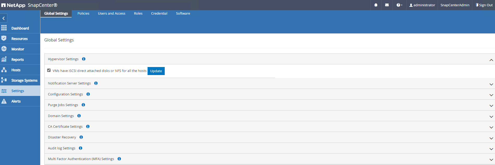
-
Oracle 데이터베이스 백업 정책을 생성합니다. 장애 발생 시 데이터 손실을 최소화하기 위해 보다 빈번한 백업 간격을 허용하는 별도의 아카이브 로그 백업 정책을 생성하는 것이 가장 좋습니다.

-
데이터베이스 서버를 추가합니다
CredentialDB VM에 대한 SnapCenter 액세스용 자격 증명에는 Linux VM에 대한 sudo 권한 또는 Windows VM에 대한 관리자 권한이 있어야 합니다.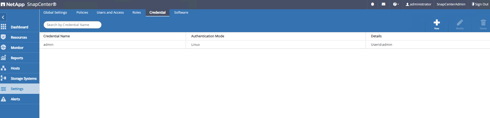
-
FSx ONTAP 스토리지 클러스터를 에 추가합니다
Storage Systems클러스터 관리 IP를 사용하여 fsxadmin 사용자 ID를 통해 인증됩니다.
-
VMC의 Oracle 데이터베이스 VM을 에 추가합니다
Hosts이전 6단계에서 만든 서버 자격 증명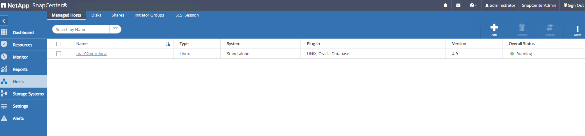
|
|
SnapCenter 서버 이름을 DB VM의 IP 주소로 확인할 수 있고 DB VM 이름을 SnapCenter 서버의 IP 주소로 확인할 수 있는지 확인합니다. |
데이터베이스 백업
Details
SnapCenter는 FSx ONTAP 볼륨 스냅샷을 활용하여 기존의 RMAN 기반 방법론에 비해 훨씬 더 빠른 데이터베이스 백업, 복원 또는 복제를 수행합니다. 스냅샷은 데이터베이스가 스냅샷 전에 Oracle 백업 모드로 전환되므로 애플리케이션 정합성이 보장됩니다.
-
에서
Resources탭에서 VM이 SnapCenter에 추가된 후 VM의 모든 데이터베이스가 자동으로 검색됩니다. 처음에는 데이터베이스 상태가 로 표시됩니다Not protected.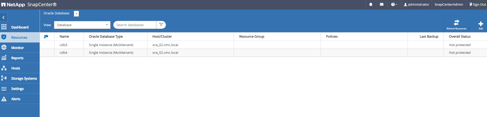
-
리소스 그룹을 생성하여 데이터베이스를 DB VM별 등의 논리적 그룹으로 백업합니다 이 예에서는 VM ora_02의 모든 데이터베이스에 대해 전체 온라인 데이터베이스 백업을 수행하기 위해 ora_02_data 그룹을 만들었습니다. 리소스 그룹 ora_02_log는 VM에서 아카이빙된 로그만 백업합니다. 리소스 그룹을 생성하면 백업을 실행할 스케줄도 정의됩니다.
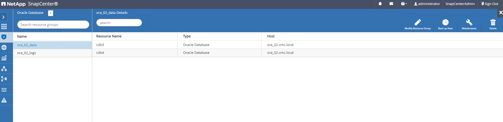
-
를 클릭하여 리소스 그룹 백업을 수동으로 트리거할 수도 있습니다
Back up Now리소스 그룹에 정의된 정책으로 백업을 실행합니다.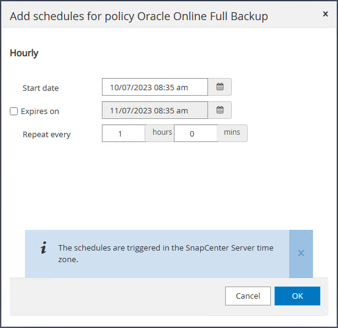
-
에서 백업 작업을 모니터링할 수 있습니다
Monitor탭을 클릭하여 실행 중인 작업을 클릭합니다.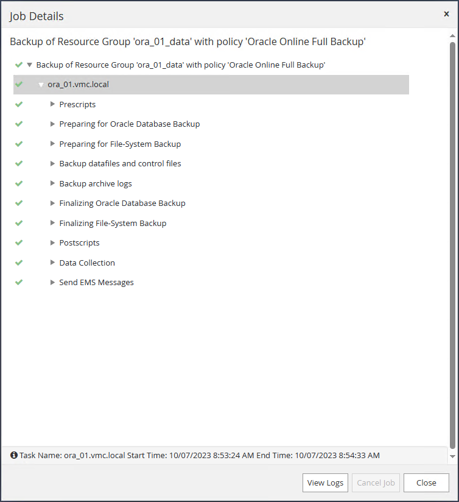
-
백업이 성공한 후 데이터베이스 상태는 작업 상태와 가장 최근 백업 시간을 표시합니다.

-
데이터베이스를 클릭하여 각 데이터베이스의 백업 세트를 검토합니다.
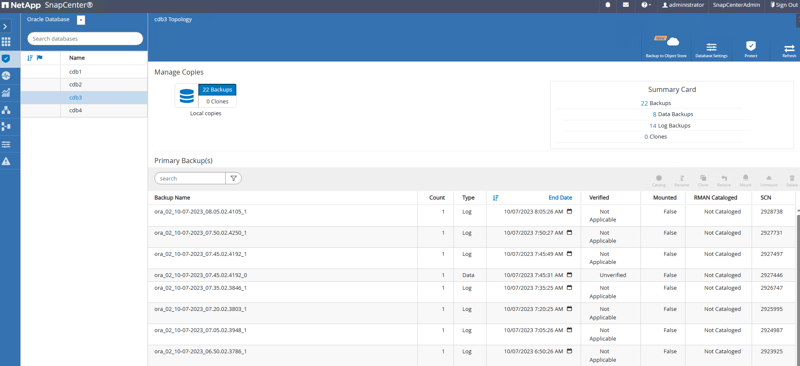
데이터베이스 복구
Details
SnapCenter는 스냅샷 백업을 통해 Oracle 데이터베이스를 위한 다양한 복원 및 복구 옵션을 제공합니다. 이 예에서는 삭제된 테이블을 실수로 복구하는 시점 복원을 보여 줍니다. VM ora_02에서 두 개의 데이터베이스 cdb3, cdb4는 동일한 + 데이터 및 + 로그 디스크 그룹을 공유합니다. 한 데이터베이스에 대한 데이터베이스 복원은 다른 데이터베이스의 가용성에 영향을 주지 않습니다.
-
먼저 테스트 테이블을 만들고 테이블에 행을 삽입하여 시점 복구를 확인합니다.
[oracle@ora_02 ~]$ sqlplus / as sysdba SQL*Plus: Release 19.0.0.0.0 - Production on Fri Oct 6 14:15:21 2023 Version 19.18.0.0.0 Copyright (c) 1982, 2022, Oracle. All rights reserved. Connected to: Oracle Database 19c Enterprise Edition Release 19.0.0.0.0 - Production Version 19.18.0.0.0 SQL> select name, open_mode from v$database; NAME OPEN_MODE --------- -------------------- CDB3 READ WRITE SQL> show pdbs CON_ID CON_NAME OPEN MODE RESTRICTED ---------- ------------------------------ ---------- ---------- 2 PDB$SEED READ ONLY NO 3 CDB3_PDB1 READ WRITE NO 4 CDB3_PDB2 READ WRITE NO 5 CDB3_PDB3 READ WRITE NO SQL> SQL> alter session set container=cdb3_pdb1; Session altered. SQL> create table test (id integer, dt timestamp, event varchar(100)); Table created. SQL> insert into test values(1, sysdate, 'test oracle recovery on guest mounted fsx storage to VMC guest vm ora_02'); 1 row created. SQL> commit; Commit complete. SQL> select * from test; ID ---------- DT --------------------------------------------------------------------------- EVENT -------------------------------------------------------------------------------- 1 06-OCT-23 03.18.24.000000 PM test oracle recovery on guest mounted fsx storage to VMC guest vm ora_02 SQL> select current_timestamp from dual; CURRENT_TIMESTAMP --------------------------------------------------------------------------- 06-OCT-23 03.18.53.996678 PM -07:00 -
우리는 SnapCenter에서 수동 스냅샷 백업을 실행합니다. 그런 다음 테이블을 놓습니다.
SQL> drop table test; Table dropped. SQL> commit; Commit complete. SQL> select current_timestamp from dual; CURRENT_TIMESTAMP --------------------------------------------------------------------------- 06-OCT-23 03.26.30.169456 PM -07:00 SQL> select * from test; select * from test * ERROR at line 1: ORA-00942: table or view does not exist -
마지막 단계에서 생성된 백업 세트에서 로그 백업의 SCN 번호를 기록합니다. 을 클릭합니다
Restore복원-복구 워크플로우를 시작합니다.
-
복구 범위를 선택합니다.

-
마지막 전체 데이터베이스 백업에서 로그 SCN까지 복구 범위를 선택합니다.

-
실행할 사전 스크립트를 지정합니다.
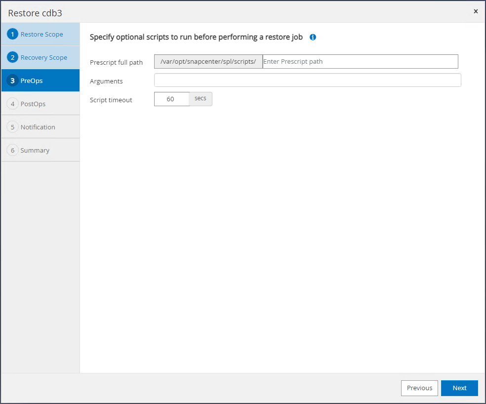
-
실행할 선택적 스크립트 후 를 지정합니다.

-
필요한 경우 작업 보고서를 전송합니다.

-
요약을 검토하고 을 클릭합니다
Finish를 눌러 복원 및 복구를 시작합니다.
-
Oracle Restart 그리드 제어에서 cdb3이 복원 중이며 복구 cdb4가 온라인 상태이며 사용 가능한 것으로 관찰됩니다.
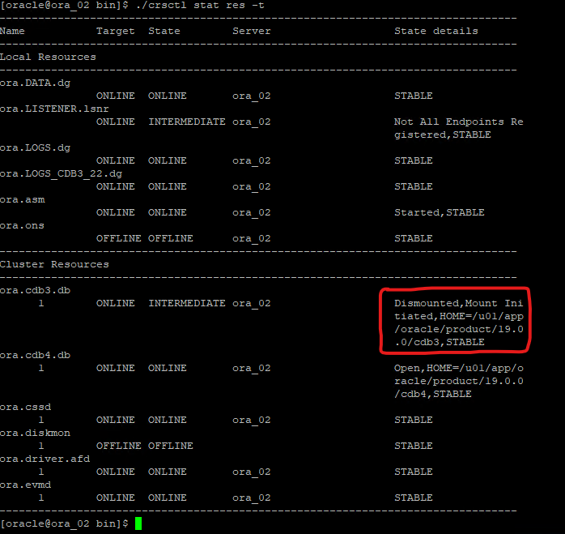
-
보낸 사람
Monitor탭에서 작업을 열어 세부 정보를 검토합니다.
-
DB VM ora_02에서 삭제된 테이블이 성공적으로 복구되었는지 확인합니다.
[oracle@ora_02 bin]$ sqlplus / as sysdba SQL*Plus: Release 19.0.0.0.0 - Production on Fri Oct 6 17:01:28 2023 Version 19.18.0.0.0 Copyright (c) 1982, 2022, Oracle. All rights reserved. Connected to: Oracle Database 19c Enterprise Edition Release 19.0.0.0.0 - Production Version 19.18.0.0.0 SQL> select name, open_mode from v$database; NAME OPEN_MODE --------- -------------------- CDB3 READ WRITE SQL> show pdbs CON_ID CON_NAME OPEN MODE RESTRICTED ---------- ------------------------------ ---------- ---------- 2 PDB$SEED READ ONLY NO 3 CDB3_PDB1 READ WRITE NO 4 CDB3_PDB2 READ WRITE NO 5 CDB3_PDB3 READ WRITE NO SQL> alter session set container=CDB3_PDB1; Session altered. SQL> select * from test; ID ---------- DT --------------------------------------------------------------------------- EVENT -------------------------------------------------------------------------------- 1 06-OCT-23 03.18.24.000000 PM test oracle recovery on guest mounted fsx storage to VMC guest vm ora_02 SQL> select current_timestamp from dual; CURRENT_TIMESTAMP --------------------------------------------------------------------------- 06-OCT-23 05.02.20.382702 PM -07:00 SQL>
데이터베이스 클론
Details
이 예에서는 동일한 백업 세트를 사용하여 다른 ORACLE_HOME의 동일한 VM에 있는 데이터베이스를 복제합니다. 이 절차는 필요한 경우 백업에서 VMC의 개별 VM으로 데이터베이스를 복제하는 경우에도 동일하게 적용됩니다.
-
데이터베이스 cdb3 백업 목록을 엽니다. 선택한 데이터 백업에서 를 클릭합니다
Clone데이터베이스 복제 워크플로우를 시작하는 버튼
-
클론 데이터베이스 SID의 이름을 지정합니다.

-
VMC의 VM을 타겟 데이터베이스 호스트로 선택합니다. 호스트에 동일한 Oracle 버전이 설치 및 구성되어 있어야 합니다.
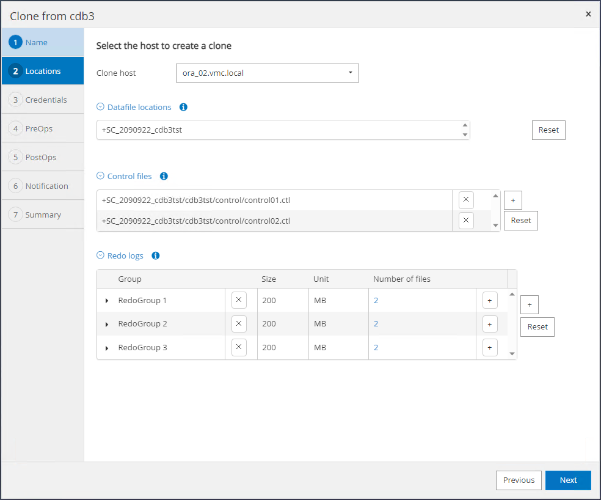
-
타겟 호스트에서 적절한 ORACLE_HOME, 사용자 및 그룹을 선택합니다. 자격 증명을 기본값으로 유지합니다.
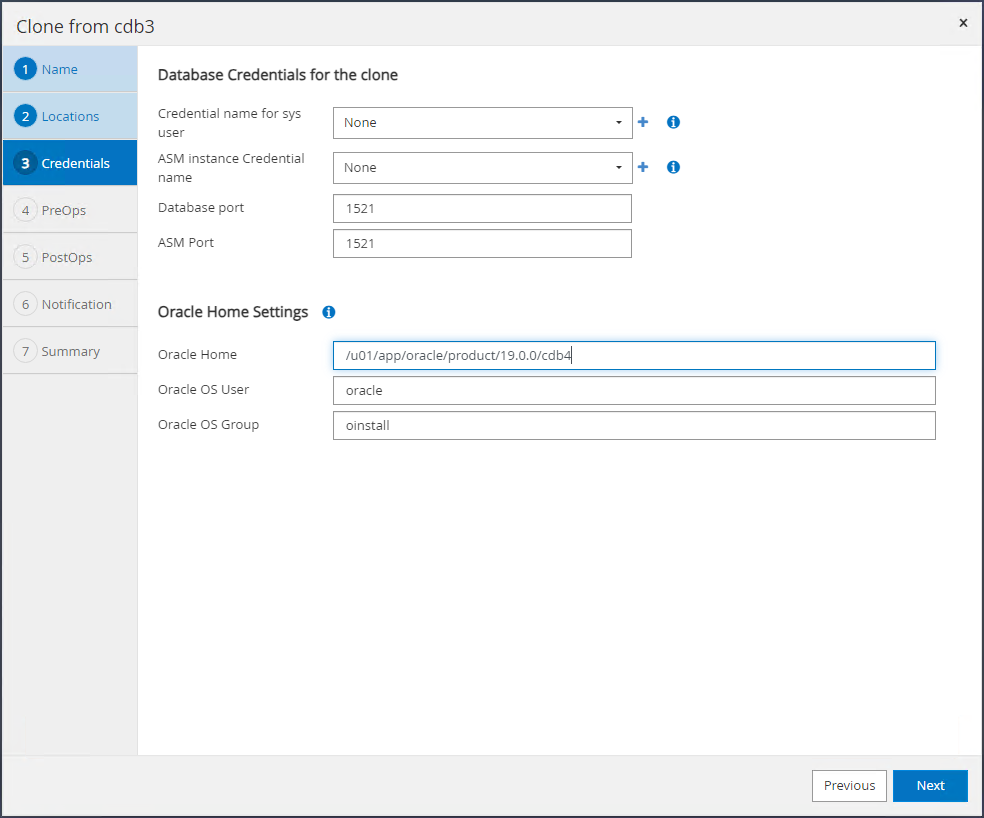
-
클론 데이터베이스의 구성 또는 리소스 요구 사항을 충족하도록 클론 데이터베이스 매개 변수를 변경합니다.
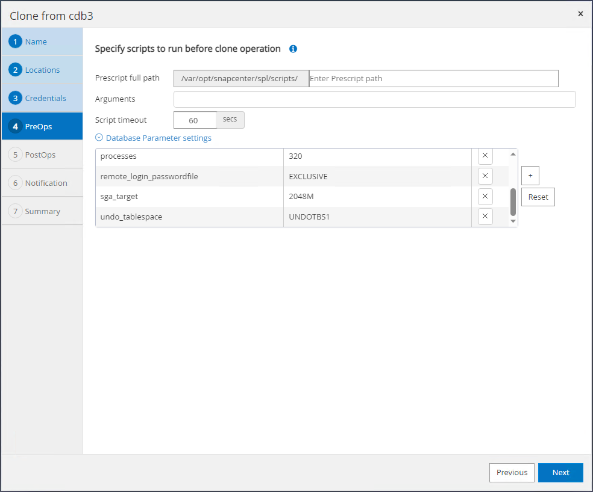
-
복구 범위를 선택합니다.
Until Cancel백업 세트에서 사용 가능한 마지막 로그 파일까지 클론을 복구합니다.
-
요약을 검토하고 클론 작업을 시작합니다.

-
에서 클론 작업 실행을 모니터링합니다
Monitor탭을 클릭합니다.
-
복제된 데이터베이스는 즉시 SnapCenter에 등록됩니다.
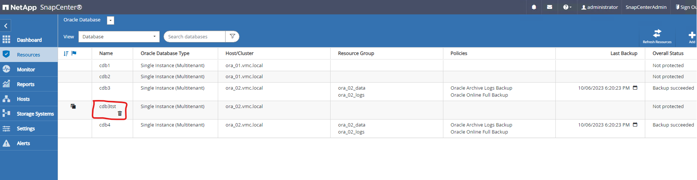
-
DB VM ora_02에서 복제된 데이터베이스도 Oracle Restart grid control에 등록되고 삭제된 테스트 테이블은 아래와 같이 복제된 데이터베이스 cdb3tst에 복구됩니다.
[oracle@ora_02 ~]$ /u01/app/oracle/product/19.0.0/grid/bin/crsctl stat res -t -------------------------------------------------------------------------------- Name Target State Server State details -------------------------------------------------------------------------------- Local Resources -------------------------------------------------------------------------------- ora.DATA.dg ONLINE ONLINE ora_02 STABLE ora.LISTENER.lsnr ONLINE INTERMEDIATE ora_02 Not All Endpoints Re gistered,STABLE ora.LOGS.dg ONLINE ONLINE ora_02 STABLE ora.SC_2090922_CDB3TST.dg ONLINE ONLINE ora_02 STABLE ora.asm ONLINE ONLINE ora_02 Started,STABLE ora.ons OFFLINE OFFLINE ora_02 STABLE -------------------------------------------------------------------------------- Cluster Resources -------------------------------------------------------------------------------- ora.cdb3.db 1 ONLINE ONLINE ora_02 Open,HOME=/u01/app/o racle/product/19.0.0 /cdb3,STABLE ora.cdb3tst.db 1 ONLINE ONLINE ora_02 Open,HOME=/u01/app/o racle/product/19.0.0 /cdb4,STABLE ora.cdb4.db 1 ONLINE ONLINE ora_02 Open,HOME=/u01/app/o racle/product/19.0.0 /cdb4,STABLE ora.cssd 1 ONLINE ONLINE ora_02 STABLE ora.diskmon 1 OFFLINE OFFLINE STABLE ora.driver.afd 1 ONLINE ONLINE ora_02 STABLE ora.evmd 1 ONLINE ONLINE ora_02 STABLE -------------------------------------------------------------------------------- [oracle@ora_02 ~]$ export ORACLE_HOME=/u01/app/oracle/product/19.0.0/cdb4 [oracle@ora_02 ~]$ export ORACLE_SID=cdb3tst [oracle@ora_02 ~]$ sqlplus / as sysdba SQL*Plus: Release 19.0.0.0.0 - Production on Sat Oct 7 08:04:51 2023 Version 19.18.0.0.0 Copyright (c) 1982, 2022, Oracle. All rights reserved. Connected to: Oracle Database 19c Enterprise Edition Release 19.0.0.0.0 - Production Version 19.18.0.0.0 SQL> select name, open_mode from v$database; NAME OPEN_MODE --------- -------------------- CDB3TST READ WRITE SQL> show pdbs CON_ID CON_NAME OPEN MODE RESTRICTED ---------- ------------------------------ ---------- ---------- 2 PDB$SEED READ ONLY NO 3 CDB3_PDB1 READ WRITE NO 4 CDB3_PDB2 READ WRITE NO 5 CDB3_PDB3 READ WRITE NO SQL> alter session set container=CDB3_PDB1; Session altered. SQL> select * from test; ID ---------- DT --------------------------------------------------------------------------- EVENT -------------------------------------------------------------------------------- 1 06-OCT-23 03.18.24.000000 PM test oracle recovery on guest mounted fsx storage to VMC guest vm ora_02 SQL>
이것으로 AWS의 VMC SDDC에서 Oracle 데이터베이스의 SnapCenter 백업, 복구 및 클론 복제에 대한 데모를 마치겠습니다.
추가 정보를 찾을 수 있는 위치
이 문서에 설명된 정보에 대한 자세한 내용은 다음 문서 및/또는 웹 사이트를 참조하십시오.
-
VMware Cloud on AWS 설명서 를 참조하십시오
-
새 데이터베이스 설치를 통해 독립 실행형 서버용 Oracle Grid Infrastructure 설치
-
응답 파일을 사용하여 Oracle 데이터베이스 설치 및 구성
-
NetApp ONTAP용 Amazon FSx